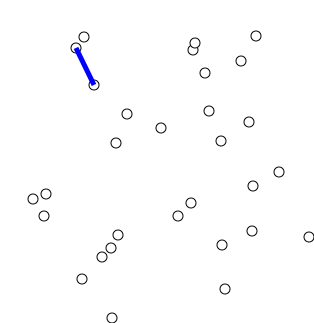

Узнав об алгоритме Краскала, давайте посмотрим на другой алгоритм, «алгоритм Прима», который можно использовать для построения «минимального остовного дерева» «взвешенного неориентированного графа».
Video: Explanation of Prim's Algorithm_1080p

На приведенной выше иллюстрации показано, как работает алгоритм Прима путем добавления вершин. В этом примере расстояние между двумя вершинами является весом ребра. Начиная с произвольной вершины, алгоритм Прима увеличивает минимальное остовное дерево, добавляя к дереву по одной вершине за раз. Выбор вершины основан на жадной стратегии, т. е. добавление новой вершины требует минимальных затрат.
Вы можете задаться вопросом: гарантирует ли алгоритм Прима, что в конце мы получим правильное «минимальное остовное дерево»? Ответ на этот вопрос — да, как мы объясним в следующем видео.
Video: Proof of Prim's Algorithm_1080p
«Алгоритм Краскала» расширяет «минимальное остовное дерево» за счет добавления ребер. Тогда как «алгоритм Прима» расширяет «минимальное остовное дерево» за счет добавления вершин.
V представляет количество вершин, а E представляет количество ребер.